7 Tailored Products
7.1 Introduction
Products by NMSs include regular reports, such as climate normal and 10-day bulletins through the rainy season. It is useful if they also produce “tailored products” that correspond to the specific demands of users.
In many countries, one such product is the “start of the rains”. This is usually not a single fixed definition but may depend on factors such as the crop being planted and the type of soil. The results in this chapter are mainly based on an analysis of the daily rainfall data.
In early years on this type of work, e.g. (Stern, Dennett, & Dale, 1982) some researchers questioned the need for the daily (rainfall) data. This was often because sufficient results could be obtained through an analysis of monthly totals supplemented, when needed, with 10-day (dekads) or weekly totals.
This was partly due to a mis-understanding that the analysis would use the daily values directly. Instead, the daily values are simply used in an initial step to calculate appropriate summaries and these are on a yearly basis. The results are then presented in the same ways as the rainfall totals and total number of rain days in Chapter 6.
7.2 Getting ready
One of the examples used in this Chapter is from Moorings in Southern Zambia. This has rainfall data from early 1922. Use Open From Library > Instat > Browse > Climatic > Zambia and open the file called Moorings.rds.
| Fig. 7.2a | Fig. 7.2b |
|---|---|
| 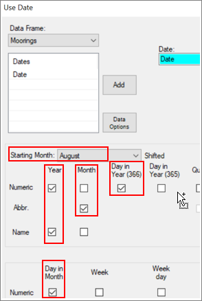 | 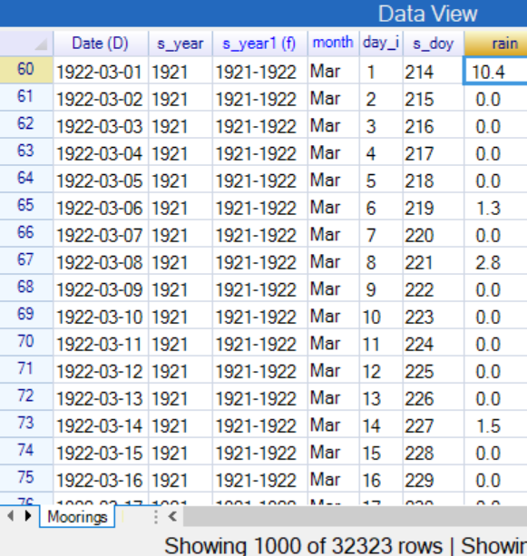 |
A feature of Moorings, like many stations in Southern Africa, is that the rainy season is from November to April. (This is roughly the mirror image of the Sahel, where the rains are from May to October.) Hence the year is “shifted” and we choose to start from August, Fig. 7.2a.
Use the Climatic > Dates > Use Date dialogue, Fig. 7.2a, and complete as shown in Fig. 7.2b. Set the starting month to August.
The resulting data, after reordering the columns, is shown in Fig. 7.2b.
In Fig. 7.2b 1st March 1922 is given as the season starting in 1921. The year variable has also been given as a factor, to emphasise it is the 1921-1922 season. The variable s_doy (shifted day of year) is 214 on 1st March. It is the day number in the season starting from 1st August as day 1.
Finally, in Fig. 7.2b, there seems nothing different about the month variable. But right-click on the column and choose Levels/Labels, Fig. 7.2c. This shows, Fig. 7.2d, that the months are now labelled from August, so all tables and graphs will now appear from August to July, rather than from January to December. Close the Levels/Labels dialogue.
| Fig. 7.2c Choose Levels/Labels | Fig. 7.2d Factor levels start from August |
|---|---|
| 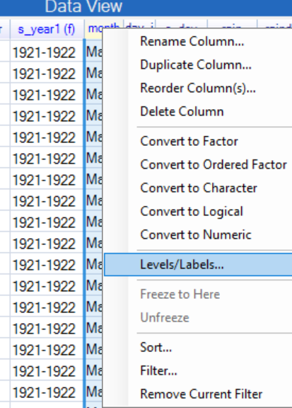 | 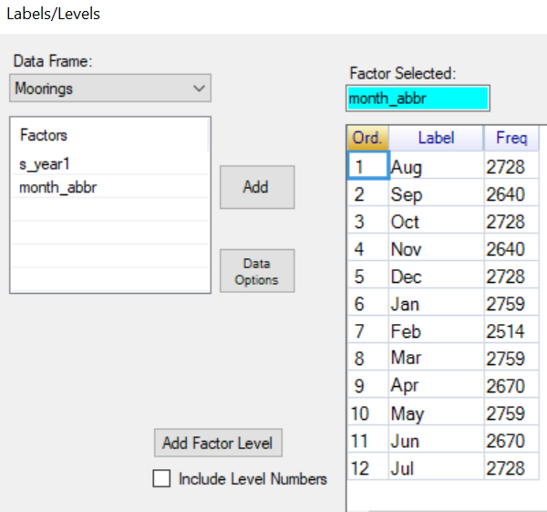 |
Now use the Climatic > Define Climatic Data dialogue.
| Fig. 7.2e Define Moorings as Climatic | Fig. 7.2f The Climatic > Prepare Menu |
|---|---|
| 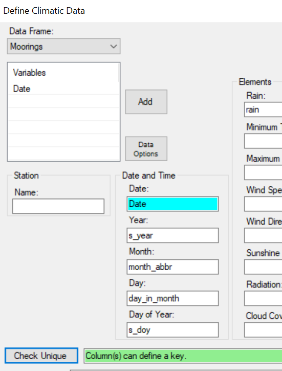 he | 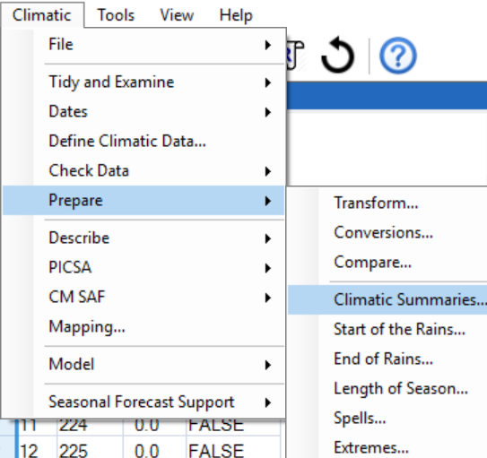 |
This dialogue should fill automatically, as shown in Fig. 7.2e. Check that the dates define unique rows, Fig. 7.2e, and press Ok.
We now assume use of the Climatic > Check Data dialogues, described in Chapter 5, and go straight to the Climatic > Prepare menu, Fig. 7.2f. Start with the Climatic > Prepare > Transform dialogue, Fig. 7.2g. Complete it as shown to produce a new variable, called rainday, see Fig. 7.2h, that facilitates the analysis of the number of rain days. A rain day is defined as one with more than 0.85mm. You can choose a different threshold if you wish.
| Fig. 7.2g | Fig. 7.2h |
|---|---|
| 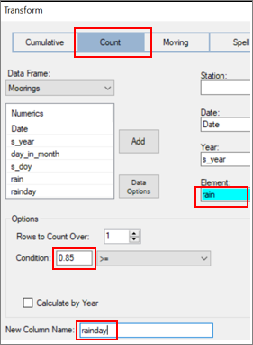 | 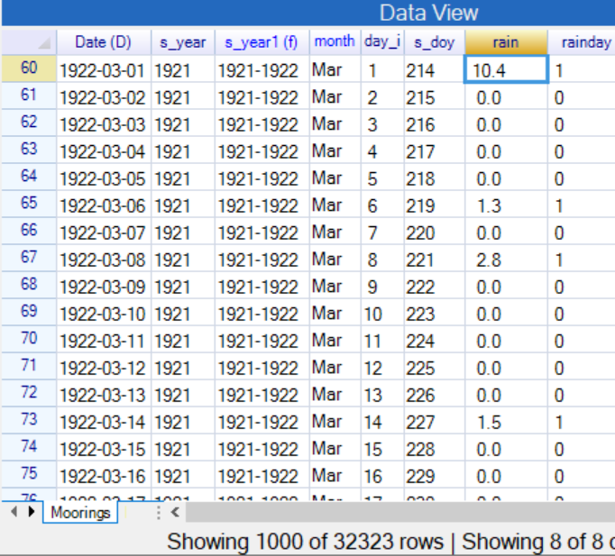 |
Now use the Climatic > Prepare > Climatic Summaries dialogue, Fig. 7.i
| Fig. 7.2i Getting annual summaries | Fig. 7.2j Annual level data frame |
|---|---|
| 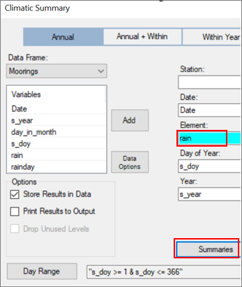 | 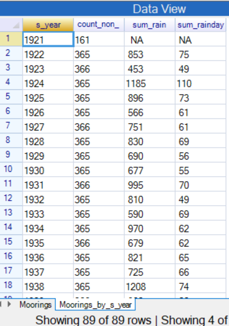 |
Most of the dialogue, in Fig. 7.2i, should have completed automatically. If not, then either the data frame was not defined as climatic, or you are on the wrong data frame.
In Fig. 7.2i, include the rain variable. Press the Summaries button and choose just the Number not Missing and the Sum. The result should be a new annual data frame with 3 columns.
In Fig. 7.2i, change the variable to rainday and this time, just get the sum as the only summary.
The resulting annual data frame is shown in Fig. 7.2j. The results show, for example, that the 1922/23 season had a total of 853mm from 75 rain days. Further columns will now be added, that give the start of the rains each year, etc.
7.3 Start of the rains
Return to the daily data and use Climatic > Prepare > Start of the Rains, see Fig. 7.2f.
The dialogue is shown in Fig. 7.3a. If it is not automatically completed as in Fig. 7.2i, then either you did not define the data as climatic (Fig. 7.2e), or you are on the wrong data frame.
Fig. 7.3a Start of the rains dialogue Climatic > Prepare > Start of the Rains |
|
|---|---|
| 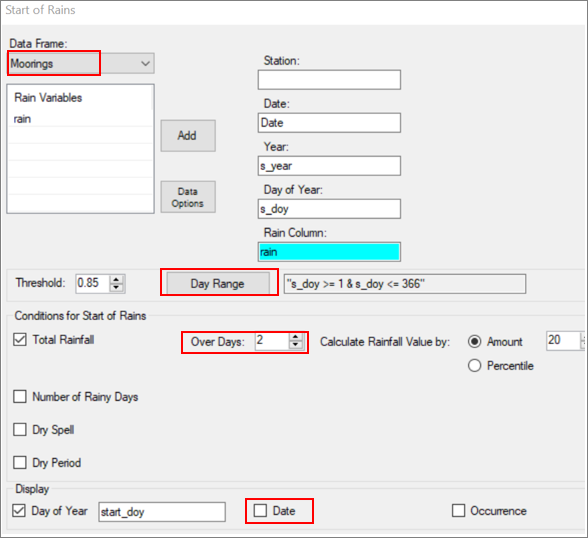 | | |
This is the first “tailored” product, i.e. there is no fixed definition. What is needed is a definition that corresponds as closely as possible to something used by farmers – perhaps for a specified crop.
The first decision is the earliest possible planting date. If there were rain in Moorings on 1st October it would almost certainly be ignored, because it would probably be followed by a long dry spell.
As an example, we suggest 15th November as the earliest date. Then also 15th January as the latest date, i.e. after then it would not be worth planting.
In Fig. 7.3a, press the Day Range button and complete the sub-dialogue as shown in Fig. 7.3b.
After returning to Fig. 7.3a change the 2 days to 3 days and choose to also save the Date column. Then press Ok. The full definition is then:
Event 1: “The first occasion from 15th November with more than 20mm within a 3-day period.”
The resulting data are in Fig. 7.3c. The Start of the rains dialogue has added 2 more columns to the yearly data frame, one giving the day number (from 1 August) and the other giving the date. In the 1922/23 season the day was 119 or 27 November, while it was also in late November for the following two seasons.
The start_doy column is used in the further analysis. The start_date column is just to assist interpretation.
| Fig. 7.3b | Fig. 7.3c |
|---|---|
| 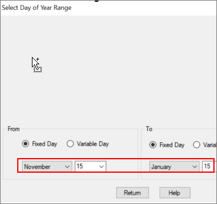 | 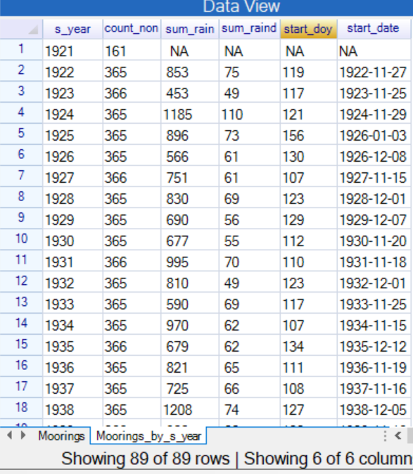 |
With the start date, or even with the totals from Section 7.2, you could proceed straight to a PICSA-type graph.
Use Climatic > PICSA > Rainfall Graph. Include the start_doy variable, and then the PICSA options Fig. 7.3d.
| Fig. 7.3d | Fig. 7.3e Sub-dialogue |
|---|---|
| 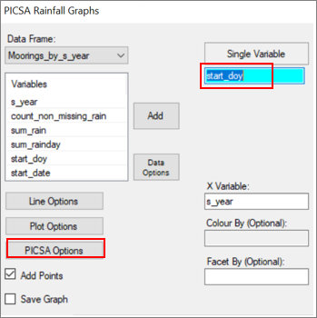 | 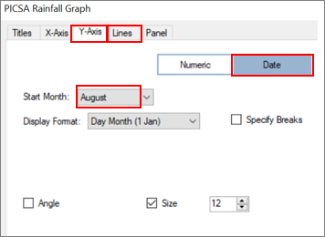 |
The sub-dialogue in Fig. 7.3e is used to display the Y-axis as dates, rather than day numbers. Use also the Lines tab to add a line for the mean, and possibly also the X-Axis to untick the angle for the labels. The resulting graph is in Fig. 7.3f.
The graph shows the mean starting day was 28th November. There was just one year with a starting date in January. There were also 10 years where the starting date was on the lower limit of 15th November. Perhaps the earliest date should have been even earlier?
As a small investigation, change the names of the two columns (right-click, Rename). Then use the Climatic > Prepare > Start of the Rains dialogue again, changing the earliest start date to 1st November[^36]. The definition is now:
Event 2: “The first occasion from 1st November with more than 20mm within a 3-day period.”
Then the PICSA rainfall graph is run again (unaltered) giving the graph in Fig. 7.3g. The mean is now 9 days earlier.
| Fig. 7.3f Start of the rains from 15 November | Fig. 7.3g Start from 1st November |
|---|---|
| 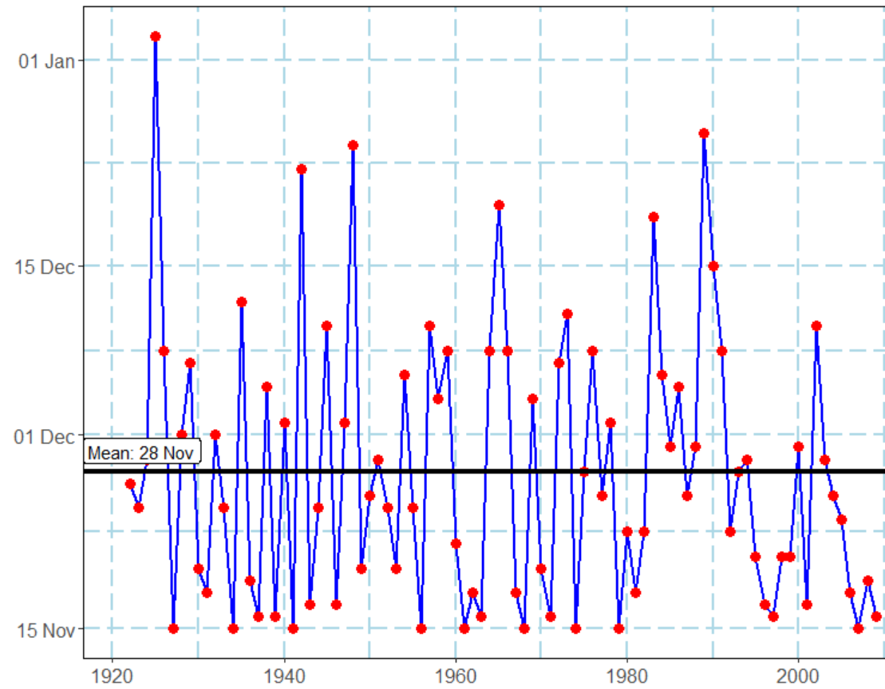 | 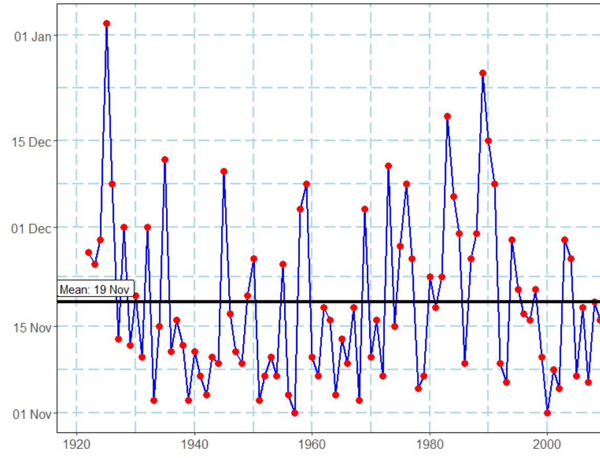 |
There are other components of the Start of the Rains dialogue that can optionally be used. For example, in India a definition (for the Summer monsoon) is of the form:
Event 3: First occasion from 1 June with more than 25mm in 5 days, or which at least 3 days are rainy.
This uses the Number of Rainy Days checkbox in Fig. 7.3a.
The third checkbox in Fig. 7.3a is called Dry Spell. Events 1 and 2 can be considered as defining planting opportunities, while if a dry spell condition is added, this might define a successful planting.
Rename the last columns that were produced – so they are not overwritten.
Then return to the Climatic > Prepare > Start of the Rains dialogue and check the Dry Spells checkbox, Fig. 7.3h. The definition is now:
Event 4: First occasion from 1st November with more than 20mm in 3 days, and no dry spell of more than 9-days in the next 3 weeks (21 days).
| Fig. 7.3h | Fig. 7.3i |
|---|---|
| 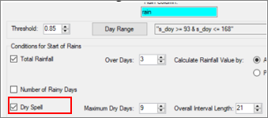 | 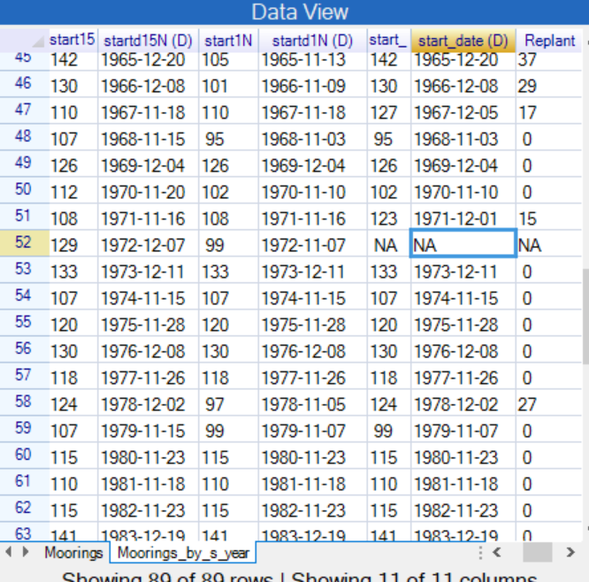 |
The data resulting from Events 1, 2 and 4 are shown in Fig. 7.3i. They show that in 1965, with Event 2, there was a planting opportunity on 13 November, but that was not successful. The date of the successful planting was 20th December.
There was just one year, namely 1972, where there was no successful planting by the imposed limit of 15 January.
Event 2 and Event 4 can be compared. Use Prepare > Column: Calculate > Calculations and subtract the date of Event 2 from Event 4, Fig. 7.3j.
| Fig. 7.3j Difference from including a dry spell | Fig. 7.3k Exceedance graph for 3 definitions |
|---|---|
| 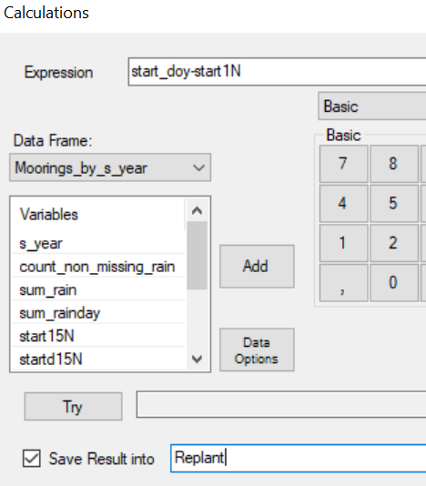 | 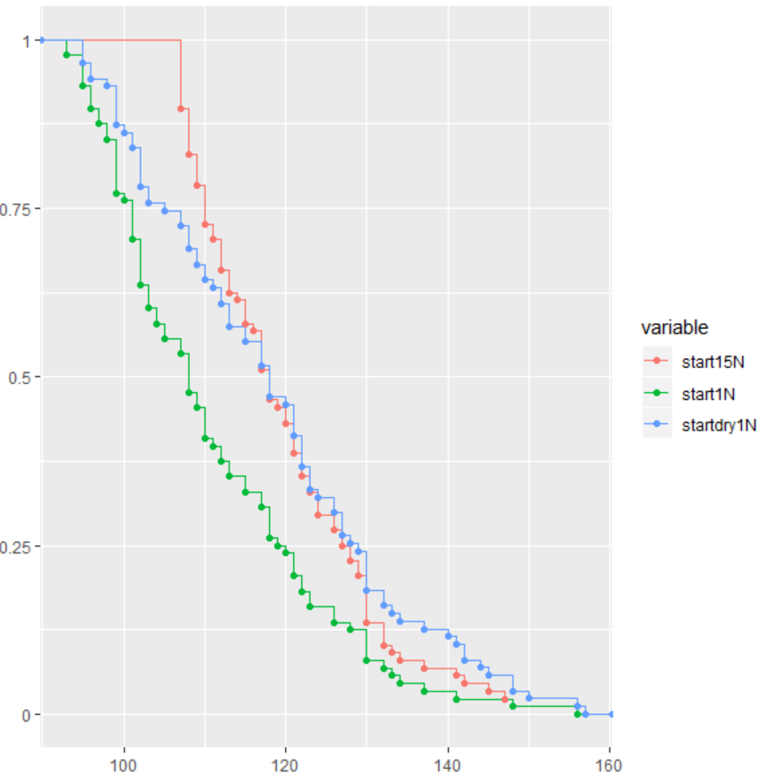 |
The results are also shown in the last column in Fig. 7.3i. Where the value in this last column is zero the first planting was successful. Otherwise the value shows the delay, before the date of the successful start. Looking down this column, or filtering, or using Prepare > Column: Reshape > Column Summaries shows there were 22 non-zero values, a risk of 1 year in 4.
If this risk is too high, then one way to reduce it, might be to omit the early planting dates and start later. Changing Event4 to start on 15th November, and comparing those results with Event 1, changes the risk to 12 years or about 14%.
Conservation farming is encouraged in Southern Zambia and one component is water conservation, using planting in small hollows. The promoters estimate this gives an extra 3 days, that seedlings could withstand drought. So, keeping to 1 November in Event 4, and changing the 9 days to 12 days could also be considered. This halves the risk, as there are then just 10 years when replanting was needed.
The data may also be plotted as exceedance graphs, as is shown in Fig. 7.3k for the Events 1, 2 and 4.
7.4 The end and length
A common definition for the end of the rainy season is based on a simple water balance model. This has been adequate in the unimodal stations in West Africa, but has problems with stations, like Moorings in the Southern hemisphere.
Hence, we first look quickly at a site in Northern Nigeria, before returning to discuss the end and length of the season at Moorings.
Use File > Open from Library > Instat > Browse > Climatic > Nigeria and open the file called Samaru.rds. The data frame called Samaru56t has 56 years of daily data from 1928, Fig. 7.4a.
| Fig. 7.4a Samaru daily data | Fig. 7.4b Start of rains for Samaru |
|---|---|
| 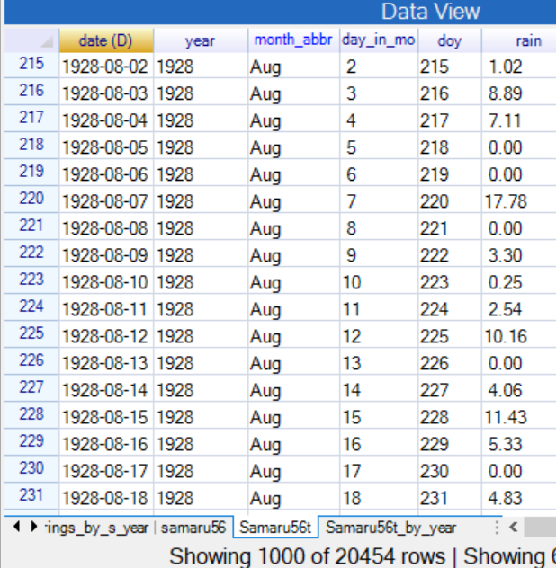 h | 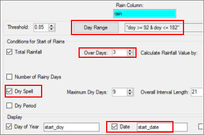 |
This data frame is already defined as climatic, so proceed directly to the Climatic > Prepare > Start of the Rains dialogue.
These data are from January. In this dialogue, set the earliest date as 1st April and the latest as 30 June. Use Event 5 as shown in Fig. 7.4b:
Event 5: First occasion from 1st April with more than 20mm in 3 days and no dry spell longer than 9 days in the next 21 days.
As in the previous section, get the starting day of year and the corresponding date.
| Fig. 7.4c End of rains/Season dialogue | Fig. 7.4d The season length |
|---|---|
| 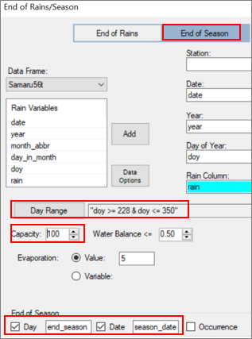 | 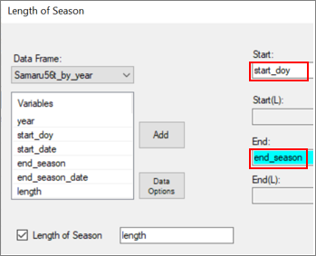 |
Now use Climatic > Prepare > End of the Rains and complete the dialogue as shown in Fig. 7.4c
The water balance “model” is like a simple “bucket”. It is empty in the dry season. It is then filled by the rainfall and loses a constant amount of 5mm per day, due to evaporation. The capacity of the bucket, in Fig. 7.4c, is 100mm. Any excess, when the bucket is full, is assumed lost to runoff.
In the middle of the season (August), the bucket is usually quite full. The end of the season is defined, in Fig. 7.4c, as the first time, after 15th August, that the bucket is effectively empty.
| Fig. 7.4e Samaru summary data | Fig. 7.4f Time-series graphs |
|---|---|
| 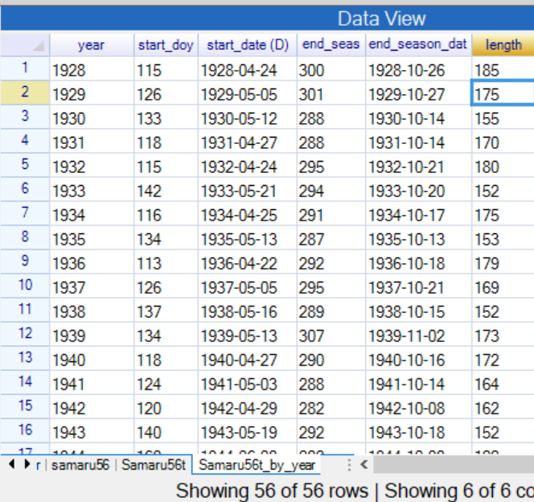 h | 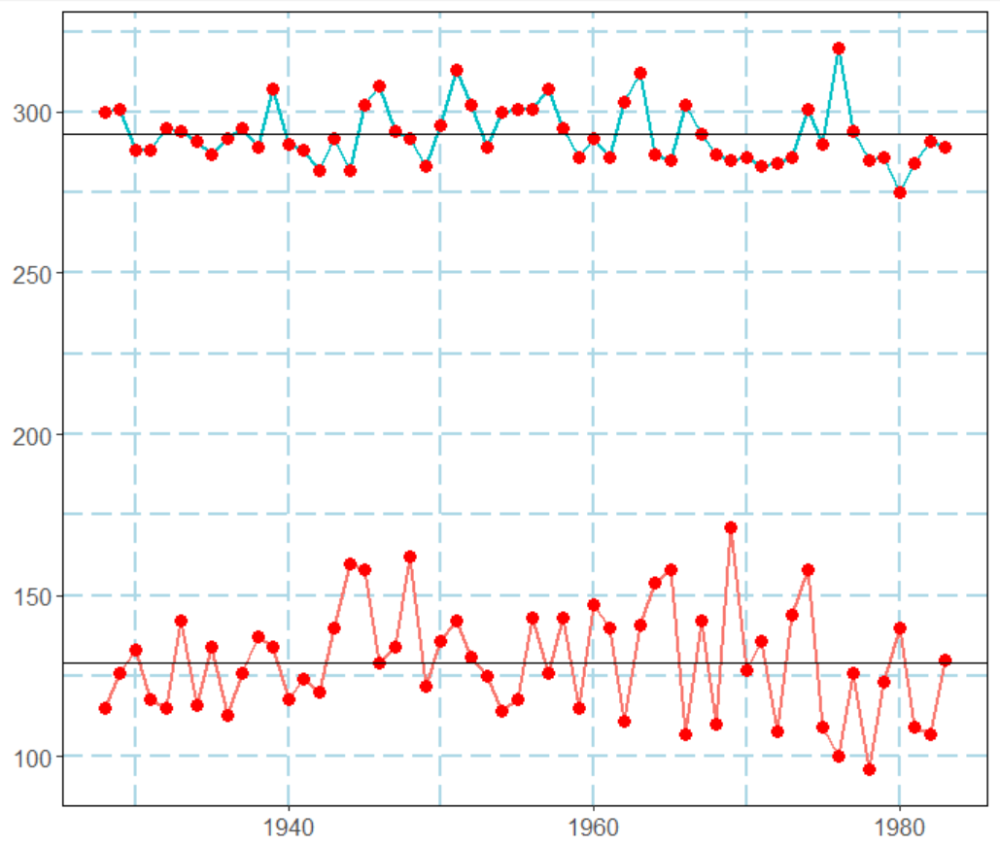 |
The length of the season is then, from Climatic > Prepare > Length, simply the difference between the end and the start dates, Fig. 7.4d.
The resulting annual data are shown in Fig. 7.4e. Various graphs are possible. The time series graph in Fig. 7.4f indicates clearly the smaller inter-annual variability of the end of the season, compared to the start. This graph was produced using Describe > Specific > Line Plot. An alternative would have been the Climatic > PICSA > Rainfall Graph.
| Fig. 7.4g Exceedance plots | Fig. 7.4h Length of the season at Samaru |
|---|---|
| 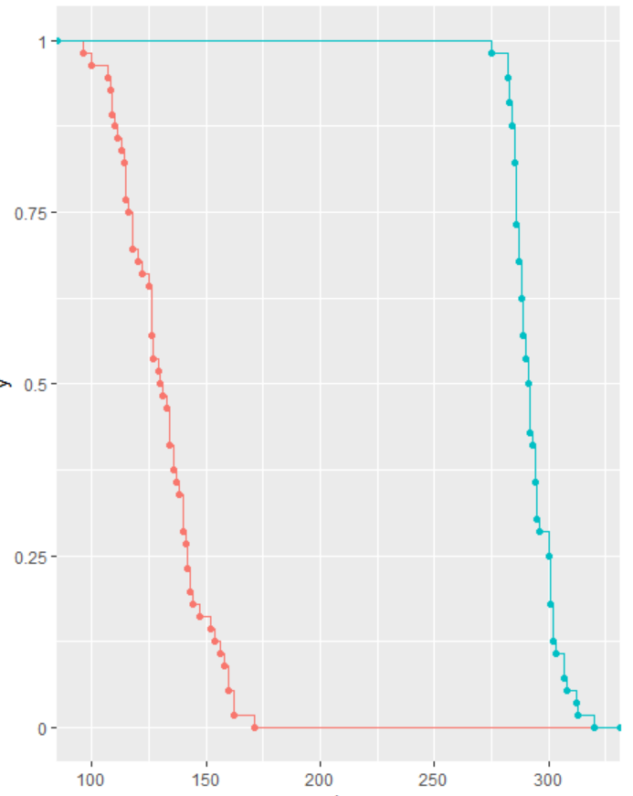 h | 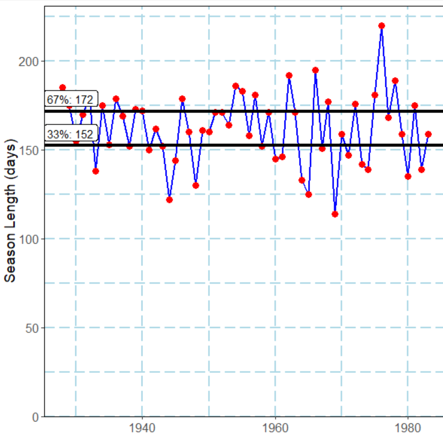 |
An alternative display is with exceedance graphs, Fig. 7.4g. Here the greater steepness of the line for the end of the season, corresponds to the lower variability. The Prepare > Column: Calculate > Calculations can be used to show the standard deviation of the start is about 17 days (over 2 weeks), while it is about 9 days (just over 1 week) for the end of the season.
Fig. 7.4h shows the length of the season, using the Climatic > PICSA > Rainfall Graphs dialogue. Terciles have been added to show that about 1/3 of the years had a season length of less than 152 days, i.e. 5 months, and 1/3 had more than 172 days – almost 6 months.
Now return to the Moorings data in the Southern hemisphere[^37]. The start was considered in Section 7.3 and we choose the definition 4, i.e. from 1 November, but with no dry spell of more than 12 days. In principle it simply remains to get the end of the season, and then the length, as above.
| Fig. 7.4i End of the season dialogue | Fig. 7.4j |
|---|---|
| 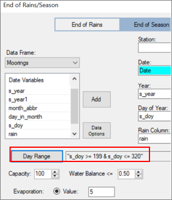 | 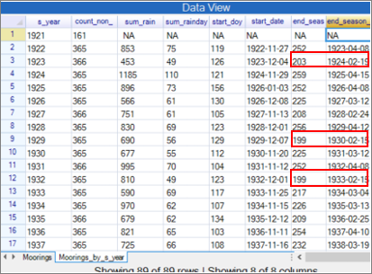 |
To illustrate the problem first try the same analysis as for Samaru, Fig. 7.4i. Make the day range 15th February to 15th June, as the equivalent of 15th August to 15th December for Samaru. The results are in Fig. 7.4j and a few of the problems are highlighted.
In some years the season appears to end in February, and sometimes on the precise day (15th February) that is the lower limit. This never happened at Samaru as the water balance was always full (or close to full) throughout August. So, August, in the Sahel, has reliable rain. This isn’t the case at Moorings, where there can be a long dry spell at any time in the season.
We would still prefer to consider issues in February as a problem during the season – which is covered in Section 7.6, - rather than necessarily a very early end of the season.
In an analysis of 5 stations in Zimbabwe, (Mupamgwa, Walker, & Twomlow, 2011) proposed a different type of definition for the end of the season. This was the last day with more than 10mm between 1 January and 30 June. This type of definition has been added to the Climatic > Prepare > End of the Rains dialogue, Fig. 7.4k.
For Moorings we have used the last day with more than 10mm up to the end of April, Fig. 4.7k.
In using this definition some meteorology staff complained that this was clearly the end of the rains and they would prefer the end of the season.
What is therefore also available in R-Instat is to use the above definition for the end of the rains and then to start the water-balance definition from that date – which is a different date each year. Return to Climatic > Prepare > End of Rains, select the End of Season and then the Day Range again, Fig. 7.4l.
In Fig. 7.4l choose Variable Day and select the end_rains variable from the summary data. Keep the end date as Fixed Day, and choose 30 June.
| Fig. 7.4k | Fig. 7.4l Day Range on End of Rains |
|---|---|
| 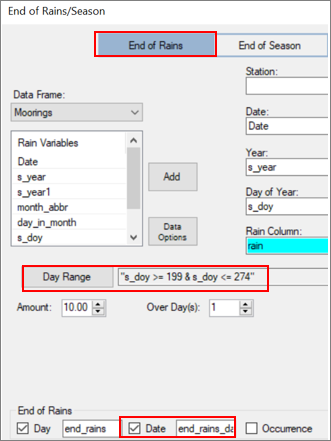 h | 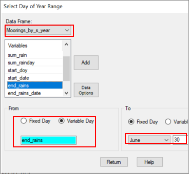 |
Return to the main dialogue, Fig. 7.4m and set as shown. The results are shown in Fig. 7.4n and are more reasonable.
| Fig. 7.4m | Fig. 7.4n |
|---|---|
| 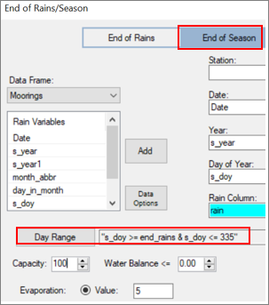 | 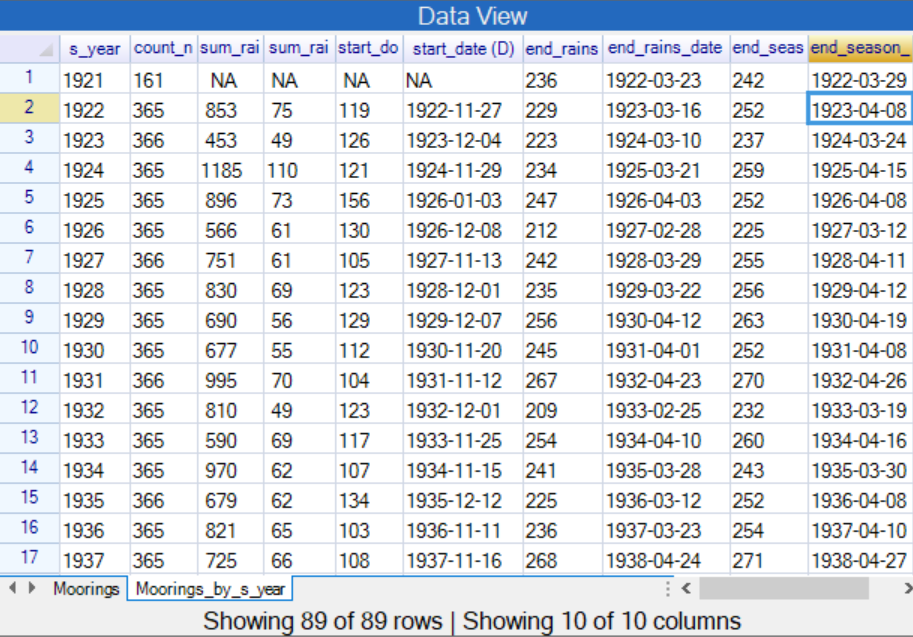 |
Now use Climatic > Prepare > Length of Season, as shown for Samaru in Fig. 7.4d, to give the length.
The start and end of the season are plotted in Fig. 7.4o. Unlike Samaru, they are approximately equally variable, and each has a standard deviation of just over 2 weeks. The cumulative frequency graph illustrates the same point, with each of the start, end_rains and end_season having roughly equal slopes and with each having a range of about 2 months (i.e. roughly 4 times the standard deviation).
| Fig. 7.4o | Fig. 7.4p |
|---|---|
| 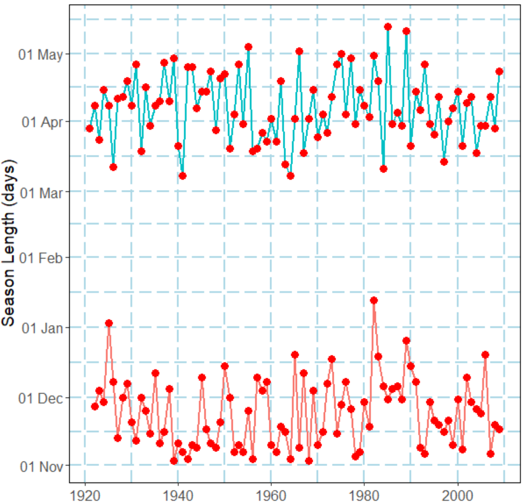 | 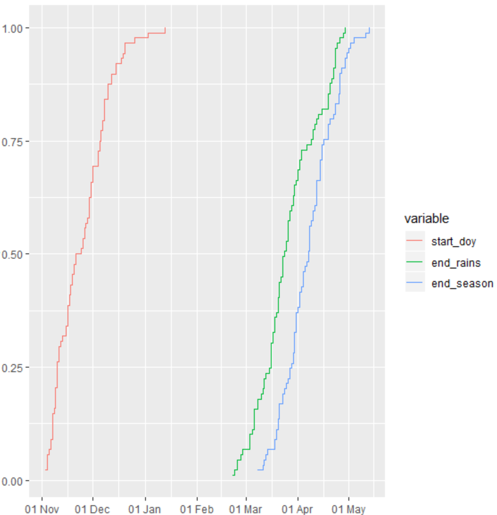 |
Fig. 7.4q plots the season lengths. Here about 1/3 have a length less than 4 months, while the longest third has a duration of five months or more.
| Fig. 7.4q |
|---|
| 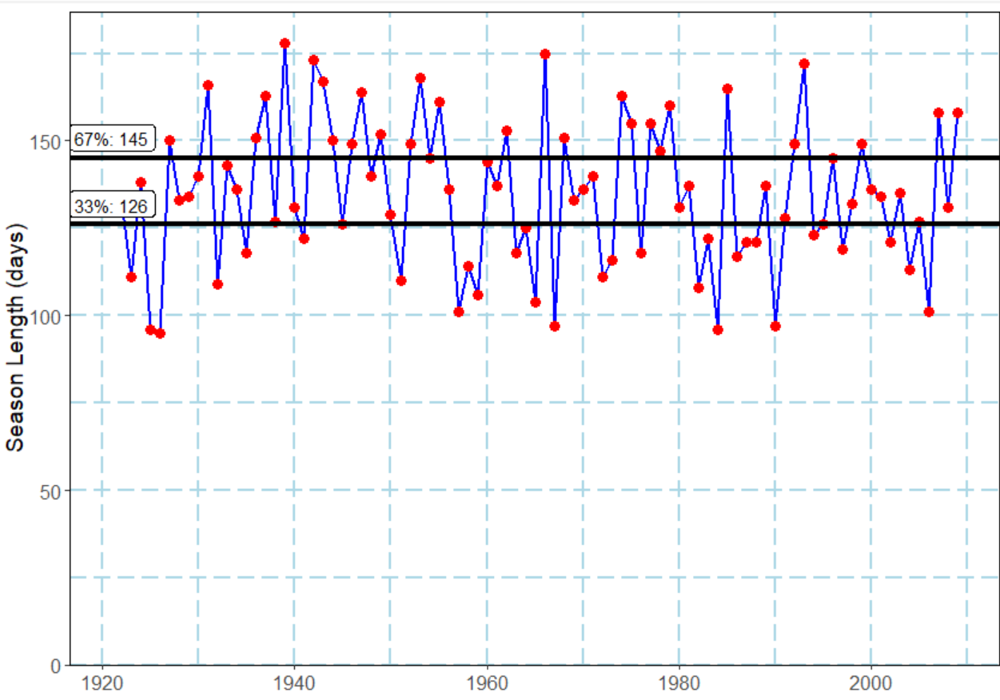 |
7.5 Coping with censored and missing data
Censoring occurs in many areas of application of statistics. The topic is particularly important in the analysis of medical data. There the survival times of patients may be recorded for a study up to 3 years. Those who survive longer are the censored observations. We know the survival is more than 3 years, but don’t know exactly how long.
In hydrology the height of a river may be measured. At times of flooding the height may be more than the measuring instrument, but the exact value isn’t known.
In climatology a heavy wind may destroy the measuring equipment. In that case the exact censoring point is unknown, but we do know that a large value occurred.
There is also possible censoring with the start and end of the season in Sections 7.3 and 7.4.
To illustrate, use the Climatic > Prepare > Start of the Rains dialogue again, Fig. 7.5a. This time we deliberately choose a small planting window, Fig. 7.5b. The latest planting date is designed to be the date beyond which a farmer would not think it would be sensible to plant for that season. That is not likely to be 30 November, but we choose that early date to illustrate the issue of censoring.
| Fig. 7.5a | Fig. 7.5b |
|---|---|
| 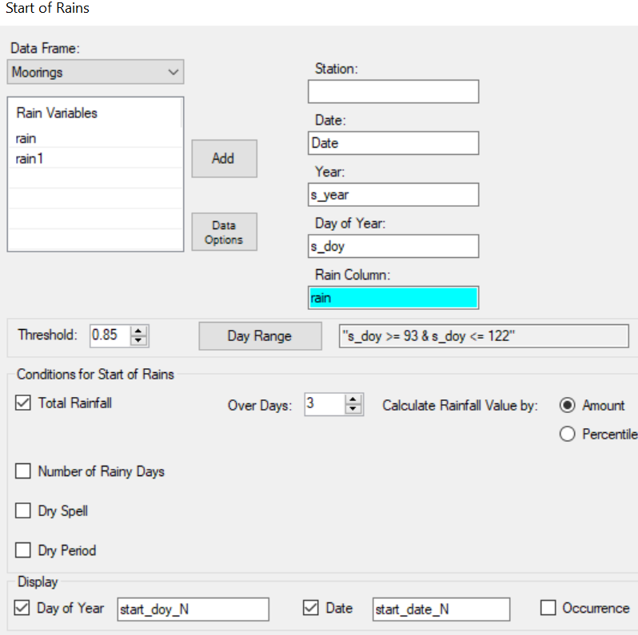 | 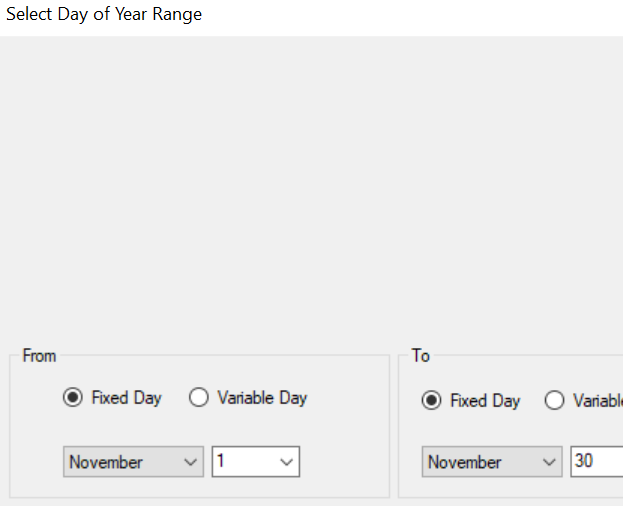 |
In Fig. 7.5a the variable names for the results are also changed, to avoid overwriting the previous variables. The results are in Fig. 7.5c, together with the previous ones. In the 1925/26 season the earliest planting opportunity was 3rd January. This is now too late and hence is now given as a missing value. The same is done in the following season when the earliest date was 8th December.
In the subsequent analysis we should examine the number of occasions that planting was not possible. One way is to use the Climatic > Tidy and Examine > One Variable Summarise dialogue, Fig. 7.5d.
| Fig. 7.5c | Fig. 7.5d |
|---|---|
| 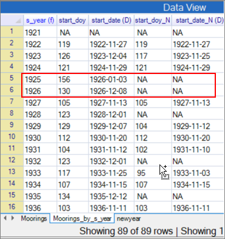 | 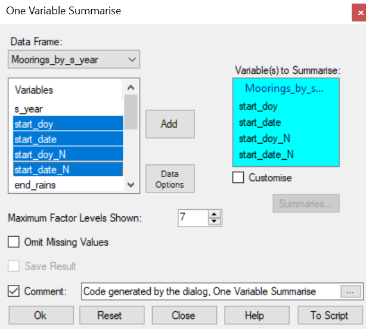 |
The results, in Fig. 7.5e, indicates there were 17 seasons in which the new starting date was censored. However, the problem is that there was already one season for which the original definition was missing. That was not due to censoring, but because there were also missing values in the first season.
| Fig. 7.5e | Fig. 7.5f |
|---|---|
| 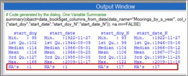 |
So, there were, 16 years when no planting was possible in November. That is interesting information itself. But the main problem is that the summaries are missing for 2 different reasons, namely either because there were days with missing data, or because planting was not possible, i.e. there was censoring.
To proceed we fist explain how R-Instat handles missing values, i.e. days when the rainfall was not recorded. There are various options when producing (say) monthly summaries that were discussed earlier. But what happens with the start and end of the rains.
For the start of the rains the summary is set to missing if any day is missing in the period calculated. For example in Fig. 7.5c the start in 1922/23 was on 27th November.
Had any value been missing between 1st and 27th November 1922, then the result would have been set to missing.
If there were a missing day on 1st December 1922 the result would be given, i.e. it would not be set to missing, because the rains had already started.
One detail is that the result would also be set to missing if either 30th or 31st October 1922 were missing, because then the 3-day total on 1st November cannot be calculated.
The same idea is true for the end of the rains, i.e. if a missing value is encountered in the period when it calculates the end of the rains, then the result is set to missing. Otherwise it is given.
For the Moorings data there is only one missing day in the record, once it has started in early 1922. This was on 10th March 2004. The end of the rains was defined to be last occasion with more than 10mm between 1 January and 30 June. This missing value is within the period, but the calculation has “worked backwards” and found the last day on 23rd March 2004. The missing value did not affect this calculation and hence the value is given.
The calculation is more complicated for the water balance definition. If there are missing water-balance values in the period of calculation, then the summary is set to missing. If the rainfall is ever missing, then the water balance is set to missing. Once the rainfall is no longer missing the water balance may still be missing, because it does not know what the state was, just after the rainfall data resumed. Hence, the analysis is doubled, starting with both a full and an empty balance (i.e. the two extremes). While these are different, the water balance is still set to missing. Once they are the same, the water balance calculation resumes.
These decisions on missing values are strict and some users may feel that a single missing day should not set the summary for that year, or season, to be missing. In that case consider infilling the data, discussed in chapter xxx.
We now return to the censoring problem. Return to the Climatic > Prepare > Start of the Rains dialogue in Fig. 7.5a and tick the third option for saving columns, called Occurrence. This adds a logical column to the summaries that can be used to distinguish between missing and censored seasons.
| Fig.7.5g Fig. 7.5h |
To be continued once status variable sorted.
7.6 During the season
This section considers examples of risks during the rainy season.
Chapter 6 examined rainfall totals and rain days throughout the year. Now they are examined for the season.
The simplest is to consider fixed periods. At Moorings the rainy season is from November to April. Use Climatic > Prepare > Climatic Summaries, as shown in Fig. 7.6a.
In Fig. 7.6a press Summaries and choose just the N non-missing and the Sum. Click on Day Range and choose 1 November to 30 April.
| Fig. 7.6a Summaries for Moorings | Fig. 7.6b Rename the resulting columns |
|---|---|
| 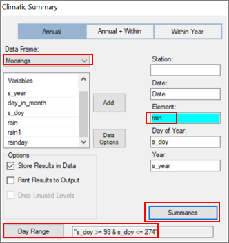 h | 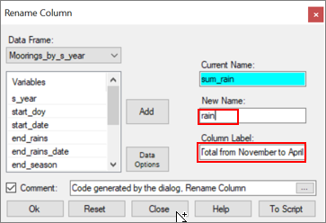 |
Once run, change the rain variable in Fig. 7.6a, to raindays, and this time just get the Sum. You may have found that the variables overwrote the ones produced earlier for the full year. To ensure this does not happen in the future, rename the 3 columns, Fig. 7.6b. It is also useful to add an explanatory label as shown in Fig. 7.6b.
| Fig. 7.6c Day Range sub-dialogue | Fig. 7.6d Main climatic summaries dialogue |
|---|---|
| 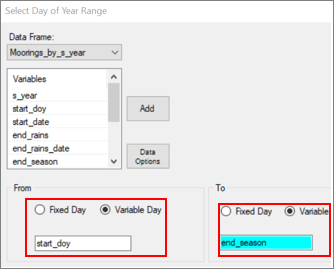 h | 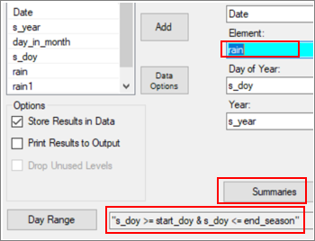 |
The totals can also be calculated for the rainy season each year. Return to the Climatic > Prepare > Climatic Summaries dialogue. Use the rain variable and then press Day Range. Complete as shown in Fig. 7.6c, where the total is now from the start doy to the end-season. This is confirmed on the return to the main dialogue, Fig. 7.6d.
In Fig. 7.6d click on Summaries and choose the Count Non Missing and the Sum. Once produced, right-click and rename the Sum variable as rainSeason. The Count Non Missing column is now the season length. This is another way to get the length!
A third possibility is to produce the total (or the number of rain days) for a fixed period following the start. Return once more to the Climatic > Prepare > Climatic Summaries and change the Day Range as indicated in Fig. 7.6e, i.e. for 120 days from the start.
| Fig. 7.6e | Fig. 7.6f |
|---|---|
| 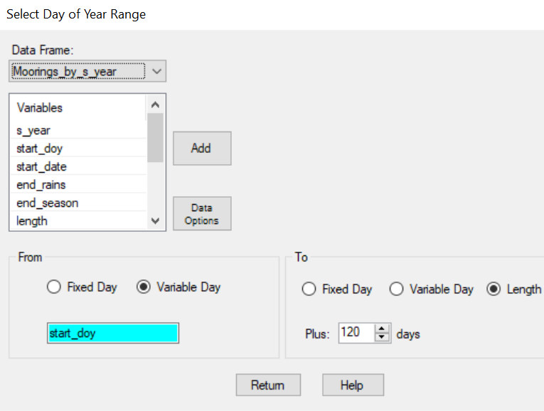 | 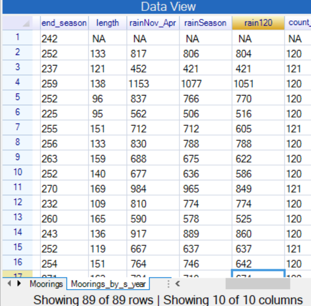 |
This would be for a 120-day crop. The approximate water requirement of many crops is known, so the results are the first step in calculating the risks of not having enough water for a specified (20 day) crop in the period following planting.
The summary columns produced are shown in Fig. 7.6f.
The results are presented as exceedance probabilities in Fig. 7.6g and as time series in Fig. 7.6h.
| Fig. 7.6g Exceedance graphs of rainfall totals | Fig. 7.6h Time-series graphs |
|---|---|
| 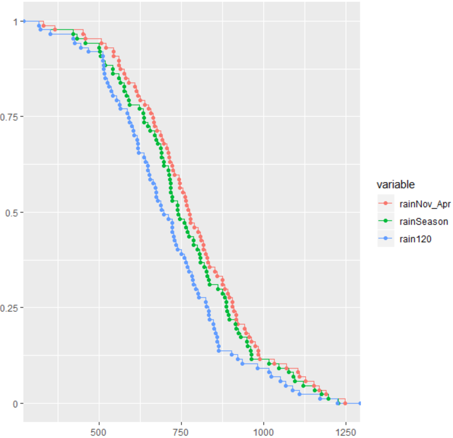 |
The three totals are sufficiently similar that plotting the 3 lines on a single time-series graph in Fig. 7.6h would be confusing, so they are plotted as facets[^38]….
The same ideas are now considered for spell lengths. In the tropics, drought is a problem and hence we consider the occurrence of long dry spells. The same dialogue could equally be used for hot, or cold, spells in temperature data, etc.
The simplest is to find the longest spell length within the main months of the rainy season. Continuing with the Moorings data, use Climatic > Prepare > Spells, Fig. 7.6i.
Use the Day Range sub-dialogue to specify January 1 to March 31 as the range of days. The results, shown in Fig. 7.6j give the longest dry-spell length within this 3-month period. It shows the longest number of consecutive days with rain less than 0.85mm on any day.
| Fig. 7.6i Spells dialogue ***Fig. 7.6j Spell le | ngths Jan-Mar & Apr*** |
|---|---|
To clarify the results, use Climatic > Check Data > Display Daily[^39]. Data for 4 early years are in Fig. 7.6k to be compared with the results in Fig. 7.6j.
In Fig. 7.6j the longest spell in 1924 is 19 days. Fig. 7.6k shows that this is a spell from 13th February to 2nd March. In 1925 the longest spell was just 6 days and was at the end of March. This included days with small rainfalls, but each was lower than the 0.85mm threshold.
The 7-day spell in 1926 was also at the end of March. In 1927 there was also a long dry spell (14 days) at the end of March, and this also shows that just the longest spell is given. That year also had 13 consecutive dry days in January. If more detail is needed, then the three months could be considered individually.
It sometimes causes confusion that the longest spell in a month can be longer than the month itself. We illustrate by calculating the longest spell length in April. The results are also given in the last column in Fig. 7.6j. They show that the longest dry spell in April 2024 was 43 days. This is confirmed from Fig. 7.6k, because 1st April 2024 “inherited” a dry spell from March, of 13 days, i.e. from 19th March. So, 1st April was already the 14th consecutive dry day and this had become 43 days by the ned of April. There is an option in the dialogue if you only wish to consider April itself. This option is used in Section 7.7.
| Fig. 7.6k Data for January to April for 4 years |
|---|
As with the rainfall totals, it is sometimes useful to find the longest dry spell in the rainy season, (i.e. between the day of the start and the end) or in part of the season. As with the rainfall totals this uses the start and end dates each year. In the Climatic > Prepare > Spells dialogue, change the day range as was shown for the rainfall totals in Fig. 7.6c and Fig. 7.6e.
Fig. 7.6l shows the results for the season, i.e. between the date of the start of the rains and the end of the season. The median value for the longest spell length is 14 days (2 weeks). The terciles are also given, showing that one year in 3 has a longest spell length of 12 days or less. But also a third of the years has a spell length of 18 days or more.
Fig. 7.6m shows the longest spell lengths for the 120 days following planting. The results are similar, but without the longest spells shown in Fig. 7.6l.
| Fig. 7.6l Longest dry-spell in the season | Fig. 7.6m Longest spell in the first 120 days |
|---|---|
Many crops are particularly sensitive to dry spells during the flowering period. This is typically about 20 days (3 weeks). Suppose a crop that reaches the start of flowering 50 days after planting. Calculating the risk is currently a 2-stage process in R-Instat. First produce the new column, for the start of flowering, Fig. 7.6n. This is an instance where you can also transform the start_date as is shown in Fig. 7.6o.
| Fig. 7.6n Calculate the start of floweing | Fig. 7.6o |
|---|---|
| he |
The resulting data are in Fig. 7.6p. The flower_date variable shows that the flowering period often starts late in December or in early January, but it is occasionally also in February.
The Climatic > Prepare > Spells dialogue is now used from the start_flower day for 20 days. The resulting variable is also shown in Fig. 7.6p and is seen often to be quite short. For example, the longest spell from early 2024 for the next few years is usually just 2 or 3 consecutive dry days.
| Fig. 7.6p | Fig. 7.6q |
|---|---|
 |
The results are plotted in Fig. 7.6q using Climatic > PICSA > Rainfall Graph again. Only in 1/3 of the years is there a dry spell of one week or more. However, in 13 of the 77 years, i.e. one year in six, there was a dry spell of 10 days or more.
The graph in Fig. 7.6q is from a variable date. In a particular year, once you know the planting date, or also from crops that are photoperiod sensitive, the dates are fixed. Once calculated, if the risk is high, then perhaps remedial action can be taken, such as planning for some irrigated water to be available for this period.
A third aspect that can cause a problem during the season is a climatic extreme. This may be drought, as considered in the dry spells above. It could also be an extreme wind, or excessive rainfall causing flooding. Extremes are considered in detail in Chapter 11, hence only a single example is given here.
A question posed in relation to rainfall in Niger, was the risk of more than 100m rain within a 3-day period. The argument was that while a single day with more than 100mm would be a problem, so would, say 40mm, on each of 3 days.
Three day running totals were already used “behind the scenes” in calculating the start of the rains. Now these totals are needed explicitly. Use Climatic > Prepare > Transform, as shown in Fig. 7.6r.
| Fig. 7.6r Transform dialogue | Fig. 7.6s Resulting data totaled 3 days |
|---|---|
The resulting daily data, in Fig. 7.6s, show an instance in February 1923 where the total is more than 100mm.
Now the Climatic > Prepare > Climatic Summaries dialogue may be used again, as shown in Fig. 7.6t. The summaries are from January to March and the only summary is the Maximum, Fig. 7.6u.
| Fig. 7.6t | Fig. 7.6u Just get the maximum |
|---|---|
The resulting summary data can now be plotted as shown in Fig. 7.6v and Fig. 7.6w. From Fig. 7.6w there is 100mm or more in about 4 years in 10.
| Fig. 7.6v Time series of 3-day extremes | Fig. 7.6w Cumulative distribution |
|---|---|
7.7 It rained yesterday. Should I plant?
For Moorings, in Zambia, the definition for the start of the rains was the first occasion from 1 November with more than 20mm in 3 days.
For successful planting the condition was added that there should not be a dry spell of more than 9 (consecutive) dry days in the next 21 days. In Section 7.3 the two columns (with and without the dry-spell condition) were compared, showing that replanting would be needed in 1 year in 4.
That is an overall risk, because sometimes a planting opportunity was early and in other years there was no opportunity until December. If the data are examined more closely, they show that planting was possible by 6th November in 14 of the years. However, replanting was needed (i.e. the dry spell condition wasn’t satisfied) in 7 of these years. That is a risk of 1 year in 2 when very early planting was possible. Perhaps 1st November is too early to consider planting, unless you are willing to entertain the high risk.
This question can be turned around. Suppose, in a particular year, there is a potential planting date on 7th November. What is the risk from planting then?
| Fig. 7.7a Dry spell risk after planting | Fig. 7.7b Result from 8 Nov and 8 Dec |
|---|---|
In Fig. 7.7a the Day Range is from 8 November for 21 days. Another change is that 7th November is assumed to be rainy, i.e. not in a dry spell. So, the checkbox “Assume condition not satisfied at the start” is ticked.
The results, in Fig. 7.7b indicate that planting early is quite risky. Four years have a dry spell of 10 days or more, even in the few years shown in Fig. 7.7b. If you change the dates in Fig. 7.7a by a month, then the same analysis shows just a single year now gives a problem. Interestingly that year was not a problem with the early planting.
Summarising the two columns[^40] shows 32 years, about 1 year in 3, had a dry spell of more than 9 days with the early planting, compared with just 11 years, or 1 year in 8, from the later planting date
What we lose on risk from early planting, we potentially gain by having a longer season length. In Section 7.4 the season length was
Length = end_season – start_doy.
The results were shown in Fig. 7.4q and showed that about 1/3 of the years had a season length of less than 4 months, etc. This figure is repeated as Fig. 7.7c
Now that we know the start is on day 100 (8th November) and hence the length is, instead, found from:
Length = end_season – 100
| Fig. 7.7c | Fig. 7.7d |
|---|---|
 |
Comparing the information in Fig. 7.7c and 7.7d shows that with early planting, on day 100, there are virtually no years with a season length of less than 4 months. This is compared to 1/3 of the years overall (Fig. 7.7c). The variability is also considerably reduced, because the start is now fixed. The variability is now only because of the uncertainty of the end.
With this early planting we could therefore perhaps plan for 120-day crop. That would have almost no risk in terms of season length. If the proposed crop needs (say) 600mm of water, we could now find the proportion of years with at least that total. That uses the Climatic > Prepare > Climatic Summaries dialogue, as shown in Fig. 7.7e.
| Fig. 7.7e Fig. 7.7f | |
|---|---|
The resulting totals can then be examined in various ways. The time-series graph, Fig. 7.7f, is one option. This indicates quite a high risk of less than 600mm. A crop needing only 500mm would have a much lower risk. There are only a few years with much less than 500mm.
An alternative, with this early planting, could be to aim for a short-duration cereal crop, e.g. 90 days and then to try for a short-season legume, that might be planted as the cereal is close to maturity. Fig. 7.7d indicates that this would often have had enough time for fodder, and occasionally would have long enough to mature.
7.8 Reduce risks
In the previous section risks were calculated relative to a proposed planting date. In this section we examine the seasonal pattern of the risks. This enables a study of the following types of problem.
For Moorings the risk of replanting was about one year in three if planting on 8th November. (Assuming replanting is needed if there is a dry spell of 10 days or longer in the following 21 days.) How does this risk depend on the date of planting? Does the risk ever approach zero?
For the option of a 120-day crop that needs (say) at least 600mm of water, when would be the best days to plant?
The method is similar for these two – and for other similar problems. For simplicity the 120-day total is considered first. There is no special dialogue, so the analysis proceeds step-by-step.
First use the Climatic > Prepare > Transform dialogue as shown in Fig. 7.8a. This transforms the rainfall data into 120-day moving totals. The resulting data are shown in Fig. 7.8b after reordering the columns. They show that in the 1922/23 season there was more than 600mm if planting was before 11th January.
| Fig. 7.8a | Fig. 7.8b |
|---|---|
These data re now summarised over the years, this time to get a value for each day of the year. This uses the Climatic > Prepare > Climatic Summaries dialogue, Fig. 7.8c. Use the Within Year option in Fig. 7.8c and complete the dialogue as shown.
| Fig. 7.8c | Fig. 7.8d |
|---|---|
In the Climatic Summaries sub-dialogue use the More tab as shown in Fig. 7.8d.
This produces a new data frame shown in Fig. 7.8e.
Repeat the dialogue in Fig. 7.8c, changing the 600mm to 450mm
| Fig. 7.8e | Fig. 7.8f |
|---|---|
It now just remains to graph the results. This uses the Describe > Specific > Line Plot dialogue, Fig. 7.8f. The results are in Fig. 7.8g[^41].
In Fig 7.8g the higher (red) line is for 600mm. It shows the minimum risk corresponds to a planting on about 15th November and is then about 0.3 (30%). The lower line, for 450mm, is below 1 year in 10, for plantings from 1 November to about 10 December.
| Fig.7.8g | Fig. 7.8h |
|---|---|
One improvement in the presentation would be to smooth the lines given in Fig. 7.8g. They are quite smooth already, as there were 88 years of data. With shorter records the need for smoothing becomes greater.
Moving averages are the simplest way of smoothing. Use Climatic > Prepare > Transform as shown in Fig. 7.8h. This adds the 2 smoothed columns to the data frame.
Note also that the risks are (of course) very high from March onwards. Hence filter the data on the day of year. The 1st March is s_doy = 214.
| Fig. 7.8i | Fig. 7.8j |
|---|---|
Fig. 7.8i shows plots of the data together with the smoothed lines. R and hence R-Instat has many other methods of smoothing data. One alternative method is shown below in Fig. 7.8q.
The same ideas can be used to examine the risks of a long dry spell at different points in the season. We first consider the risk of a dry spell after a planting occasion, i.e. after a rain day. This uses the special Multiple Spells tab in the Climatic > Prepare > Transform dialogue. In Fig. 7.8j the maximum spell length is taken over 21 days, and that can, of course, be changed as required.
| Fig. 7.8k | Fig. 7.8l |
|---|---|
The next step, as before, uses the Climatic > Prepare > Climatic Summaries dialogue, Fig.7.8k to calculate the proportion of years with a dry-spell longer than 9 days in the 21 days, following planting, i.e. to correspond to the default values in the Start of the Rains dialogue.
Once calculated, repeat the operation with 7 days (for a more sensitive crop) and 12 days, perhaps to correspond to the extra days following a conservation farming strategy.
| Fig. 7.8m | Fig. 7.8n |
|---|---|
The data are shown in Fig. 7.8m where, for variety, we have used percentages rather than proportions.
The dry-spell risks are shown in Fig. 7.8n. They show that, in early November, it is quite advantageous, in terms of risk, to have the 12-days, rather than the 9 days assurance for the dry spells. By early December all 3 curves have “flattened out”, hence there is no point in delaying planting – the risks are not getting lower.
The messages would be clearer if the data in Fig. 7.8n are smoothed. This can be done in the same way as for the rainfall totals, shown earlier in Fig. 7.8h.
Many crops are sensitive to a long dry spell round flowering. The calculation is slightly different to the one above, which assumed rain for planting on day zero. This time we need the unconditional risks, i.e. a dry spell might have started before the flowering period and have continued.
Use the Climatic > Prepare > Transform dialogue again, with the Spell tab, as shown in Fig. 7.8o. Then, with the same dialogue, use the Moving tab, Fig. 7.8p, to get the maximum over 20 days. This assumes that the flowering period is of 20 day’s duration.
| Fig. 7.8o Ordinary spell lengths | Fig. 7.8p Maximum over 20 days |
|---|---|
The next steps are just as before, i.e. in Fig. 7.8k to Fig. 7.8n. They use the Climatic > Prepare > Climatic Summaries dialogue to get the percentage of years each day, with a longer dry spell than 7 or 9 days. The resulting percentages are then plotted, as before, using the Describe > Specific > Line Plot dialogue.
| Fig. 7.8q Adding a loess smoother | Fig. 7.8r |
|---|---|
This time, for illustration, the smoothing has been done “on the fly”, as additional layers in the plot. Local smoothing has been used with loess, as explained in more detail in Chapter 8.
The percentages are (as would be expected[^42]) slightly higher in Fig. 7.8r, compared with Fig. 7.8n. They show a minimum risk if the start of the flowering period is towards the end of January.
| Fig. 7.8s ***Fig. 7.8t Plot the cu | mulative data*** |
|---|---|
The final example examines the cumulative rainfall distribution each year, or season. This starts, again, with the Climatic > Prepare > Transform dialogue, this time using the Cumulative button, Fig. 7.8s.
This adds a column, called cumsum, Fig. 7.8s, giving the accumulated rainfall each year.
Now use the Describe > Specific > Line Plot dialogue to graph the cumulative data against the day of the year, Fig. 7.8t.
| Fig. 7.8u Facet sub-dialogue – by year | Fig. 7.8v Filter to choose the first 20 complete years |
|---|---|
In Fig 7.8t, use Plot Options to put the different years each in their own graph (facet), Fig. 7.8u. Then use the Data Options button, which is on each dialogue, and is another way to get to the filtering system. Choose the first 20 years of data, Fig. 7.8u as 89 years are too many graphs to show together.
The resulting graph is in Fig. 7.8w. Each graph starts at zero and rises to the annual (seasonal) total. So, for example 1938-39 was a year with over 1000mm, while 1933-34 had only about half that total.
Vertical lines, in Fig. 7.8w, correspond to high rainfall and horizontal lines to dry spells. The 1932-33 season looked like a “bumpy year”.
| Fig. 7.8w Cumulative rainfall for 20 years at Moorings |
|---|
If you remove the facets from the graphs specified in Fig. 7.8t and instead put the year factor in the main dialogue in Factor (Optional), then the resulting graph is in Fig. 7.8x. This type of display can be useful for monitoring, as you can super-impose the current year. An example is shown below.
| Fig. 7.8x Single graph of cumulative rainfall (mm). | Fig. 7.8y |
|---|---|
These graphs can be taken further. As an example, in Fig. 7.8y the green lines indicate the start of the rains each year, while the red lines show the date of the end of the season. The early and late starts, and ends, are therefore indicated. A long season is one where the lines are far apart, and so on. We explain, in Chapter 8, how these features can be added.
Boxplots can alternatively be used to display the cumulative data. A challenge is to plot them at the end of each 10-day period. This is the first example of the use of the dekads in this guide, so return to the Climatic > Dates > Use Date dialogue and complete it as shown in Fig. 7.8z. The year is shifted, so the dekads start in August.
| Fig. 7.8z | Fig. 7.8aa |
|---|---|
First get a logical column, which is TRUE on the last day of each dekad, and FALSE otherwise[^43]. This uses the calculator, Prepare > Column: Calculate > Calculations. Complete it as shown in Fig. 7.8aa.
Now filter so just the rows when the dek_diff variable is TRUE are used. The data are shown in Fig. 7.8 ab.
| Fig. 7.8ab Filtered for the last day of each dekad | Fig. 7.8ac |
|---|---|
Now use Describe > Specific > Boxplot, Fig. 7.8ac. The results are in Fig. 7.8ad[^44].
| Fig. 7.8ad Boxplots showing the cumulative rainfall at Moorings | Fig. 7.8ae A new year |
|---|---|
Fig. 7.8ad shows the progression of the cumulative rainfall for the season towards the final totals. These had a median of 800mm, with a minimum less than 500mm and a maximum of well over 1000mm.
One use of this type of plot is to monitor a new year. As an example, Fig. 7.8ae provides data, where the total has now risen to 340mm by the end of February. This information can now be super-imposed on the boxplots, as shown in Fig. 7.8af with the blue points[^45]. This example shows a great cause for concern. The totals are very low, compared to the earlier 88 years of data.
| Fig. 7.8af Adding the current year to the boxplots |
|---|